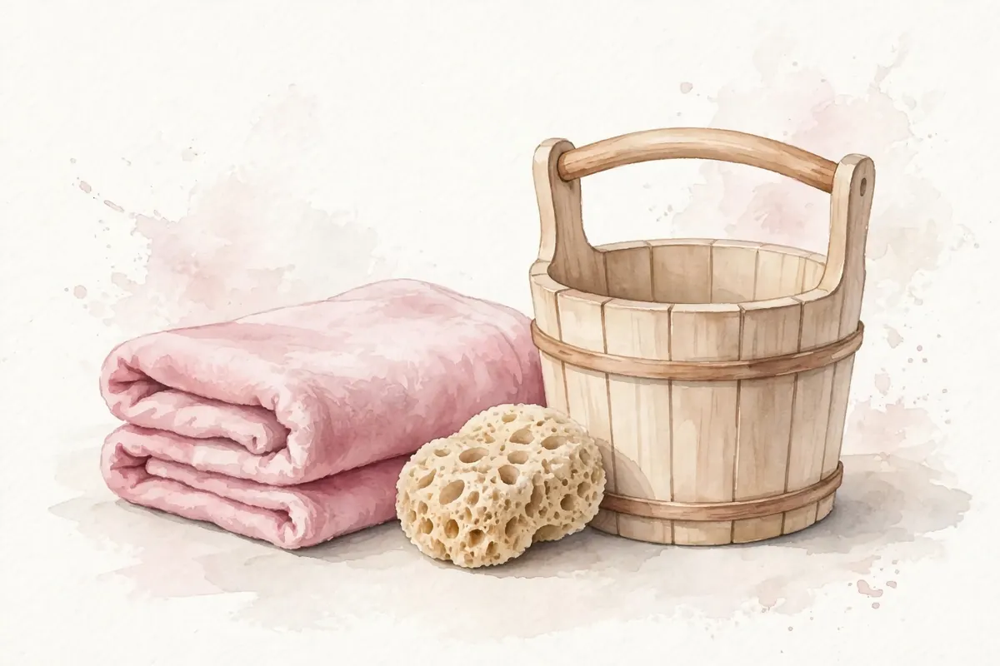
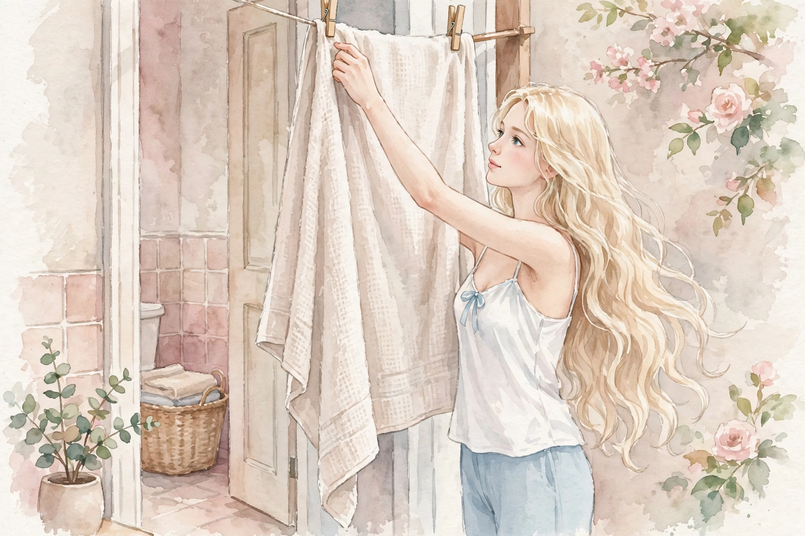

トップ ＞ ボディケア ＞ ボディタオル・スポンジの手入れと交換時期
ボディタオル・スポンジの手入れと交換時期

体を洗うボディタオルやスポンジは、毎日肌に触れる道具です。施術の現場では、タオル類の衛生管理は基本中の基本で、使う道具の状態が、そのまま仕事の質に関わります。道具の状態は、洗い上がりの感じ方にも影響します。この記事では、自宅で使うボディタオル・スポンジの手入れと、交換時期の目安の作り方を整理します。
使い終わったら「洗って、絞って、乾かす」
手入れの基本は、使い終わるたびに石けん分をよくすすぎ、水分を絞って、風通しのよい場所で乾かすことです。洗面器の中に浸けたままにしたり、濡れたまま丸めて置いたりすると、においやぬめりの原因になります。すすぎは、泡が出なくなるまでが目安です。
週に一度など、定期的にしっかり洗う日を決めておくのも方法です。洗う頻度と乾かし方は、素材によって案内が異なります。商品のパッケージに手入れ方法が書かれている場合は、それに従うのが基本です。私は、道具を掛ける場所を決めておき、家族のものと掛ける位置を分けるようにしています。掛ける場所が決まれば、乾かすという手順そのものが習慣になります。浴室の中に掛けたままにする場合は、換気のタイミングもあわせて決めておくと、乾き方が安定します。
交換を考えるサイン
交換時期は「何か月」と一律には決めにくいものです。その代わり、状態のサインで判断します。泡立ちが以前より悪くなった、においが取れなくなった、繊維がへたって肌当たりが変わった、色がくすんできた。こうした変化が重なってきたら、交換を考える時期です。
スポンジは、ちぎれや崩れが出てきたら交換のサインです。天然素材のものは特に、状態の変化を見て判断します。買い替えのタイミングを逃さないよう、予備をひとつ用意しておくと、切らすことなく回せます。新しいものと古いものを並べて触り比べると、へたり具合が分かりやすくなります。交換した日をカレンダーに書いておくと、次回の目安にもなります。
素材で、扱いが変わる
ナイロン、綿、絹、へちまなど、素材によって肌当たりも手入れの仕方も異なります。硬めの素材は汚れが落ちやすい反面、肌をこする力も強くなりがちです。洗うときの力加減は、タオルの素材に合わせて調整します。毎日強くこする必要はなく、泡を滑らせるように洗うのが、私の基本の洗い方です。部位によっても、背中は硬め、顔に近い首まわりはやわらかめ、と使い分ける方もいます。
道具は、ケアの一部です。手入れの手順と交換のサインを決めておくと、毎日の入浴の道具まわりで迷うことが減ります。
家族で使う場合は、道具の分け方も手入れの一部です。ボディタオルは、家族それぞれのものを決めておくと、衛生面の管理がしやすくなります。色や掛ける場所で見分ける方法を決めておくことも、家庭での運用の工夫です。来客用の予備を用意している家庭では、予備の保管場所も乾いた場所に置きます。
旅行や外出先に持っていく場合は、携帯用の小さいものを別に用意しておくと、自宅の道具の回し方が崩れません。濡れた道具を持ち帰るときは、袋に入れっぱなしにせず、帰宅後にすぐ出して乾かすことが、においを防ぐ段取りです。
道具の買い替えは、ケアアイテムの買い替えと周期を合わせておくと管理しやすくなります。「季節の変わり目に道具を見直す」といった、家庭の点検日を決めておく方法もおすすめです。点検日があれば、交換のサインを見逃しにくくなります。道具が整っていると、入浴そのものの段取りも整います。道具への目配りは、毎日のケアの土台です。小さな手間が、長く使う力になります。

セラフィナ「道具もケアのうち。洗って乾かして、サインが出たら取り替える。それだけだね」